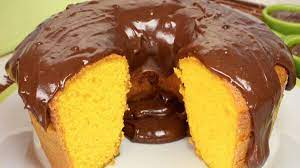

Usando a Inteligencia Artificial.
Pode-se criar coisas magnificas, como por exemplo, a receita de um bolo de cenoura, onde você pode criar variaveis de receitas, na base é apenas um receita, mas o que tem por trás é muito maior, isso é apenas o inicio de uma grande realizaçao a globalização.

Clique Aqui